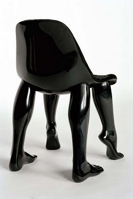

*Foto ter illustratie*
Betere Stoelen voor in de lokalen
Wij vinden het belangrijk dat de studenten een goede houding leren te hebben achter hun computers. Helaas is dat een beetje moeilijk met de stoelen die tegenwoording gebruikt worden. Wij hopen dat we volgend jaar betere stoelen kunnen krijgen om wat rugpijn te voorkomen.